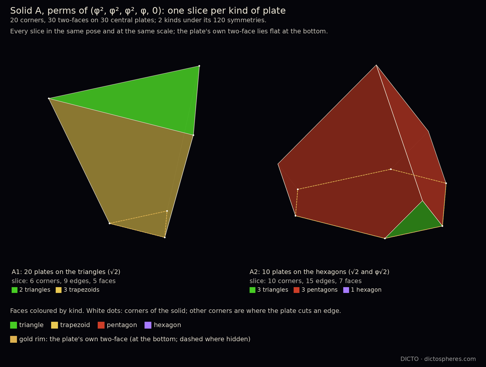
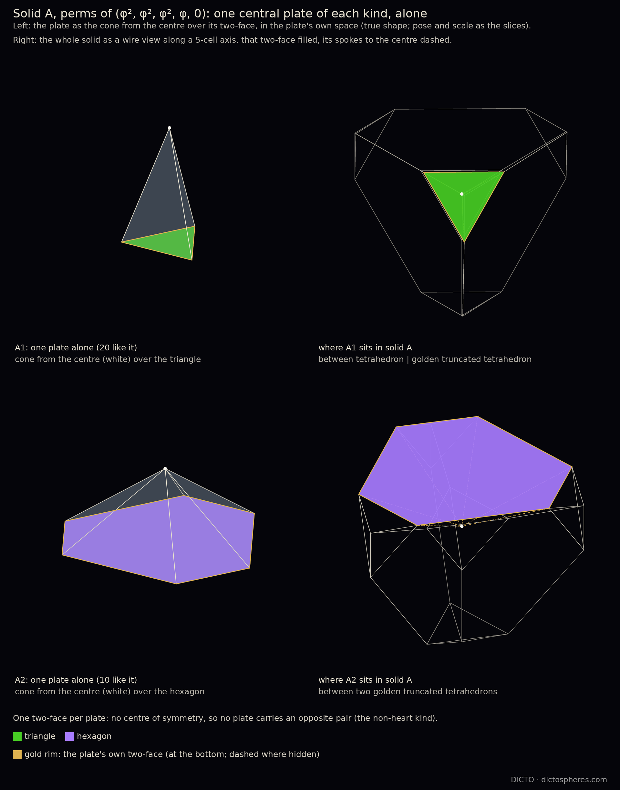
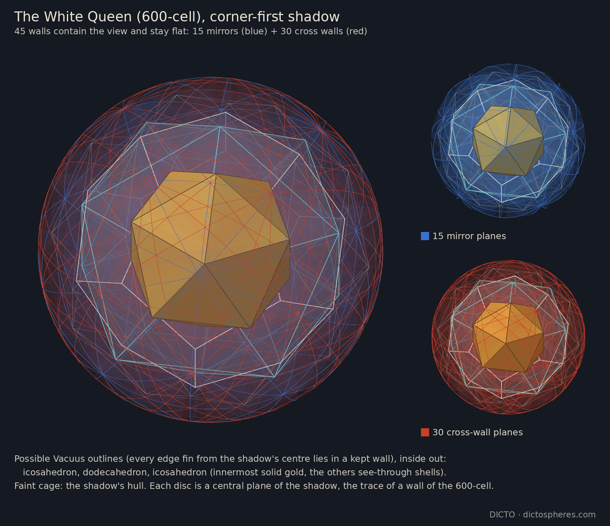

Where the silent shapes hide: the walls of the 600-cell
Abstract. Silent Running [1] found two golden solids in the 600-cell, A and B, that are silent in harmonic degrees their symmetry does not force. This paper asks where such shapes hide. We widen DICTO's Vacuus (#87, #105) to every polytope with a centre: its plates are the hyperplanes through the centre spanned by its two-faces, of the heart kind when the polytope is centrally symmetric and of the non-heart kind otherwise. The walls of the 600-cell are its 60 mirrors, which the 120-cell shares, and its 300 cross walls, the central sections parallel to opposite pairs of its cells. Main theorem: every central plate of A and of B is a wall of the 600-cell, exactly in Q(√5): A's 30 plates are mirrors; B's 80 are 40 mirrors and 40 cross walls. Ordinary orbits of the same symmetry have most of their plates in no wall, and random sets of the 600-cell's corners of the same sizes are never all-wall in 100 tries. We then ask DICTO's reverse question, "if this is the steak, where is the cat": by corners, the 600-cell is exactly A, −A, B, −B and a uniform expanded 5-cell; by walls, A and B together carry all 60 mirrors; by solids, they do not build it, and the 360 walls cut each of the two Queens (the 600-cell and the 120-cell) into 4,291,200 chambers, none of them a named shape. Read as Vacuus, the shapes round the Queens are mostly hidden in these walls: the snub 24-cell, the grand antiprism and every diminished 600-cell in the mirrors; the inscribed 24-cells and 600-cells in the cross walls only. A truncated 600-cell on the line between the Queens, at μ = 1/2 + √5/5, has the whole wall system as its Vacuus. Every shadow of the Queens keeps the walls parallel to its side-on cells, and the shadows join into one lattice of possible Vacuus.
In Silent Running a submarine sits on the sea bed while the ships above listen for it. It is silent at exactly the frequencies the listeners are tuned to, and to them it passes as one more shape on the sea bed [1]. That paper explained the silence. This one asks the next question: where on the sea bed was it lying, and why did nobody see it there? The image is DICTO's, and so is the answer he gave on 16 November 2026: the silent shapes were not seen because they look like the walls of the 600-cell. It is a case of not seeing the wood for the trees, and here the trees are in the walls.
The 600-cell is the four-dimensional solid with 120 corners, 720 edges, 1200 triangles and 600 tetrahedral cells, first described by Schläfli in 1852 [3]. Its partner, the 120-cell, has 600 corners and 120 dodecahedral cells. In DICTO's books they are the Queens: the White Queen is the 600-cell and the Red Queen the 120-cell. Both are cut through the middle by many flat walls, mirrors of their symmetry and sections parallel to their cells. A shape built from the Queen's corners whose every flat face spans one of those walls looks, from inside the Queen, like part of the Queen's own frame. That is the sense in which the silent shapes are hidden.
There is an old story, usually told of Mulla Nasruddin. A man buys meat and leaves it at home; his wife eats it and says the cat did. He weighs the cat, finds it weighs exactly what the meat weighed, and asks: if this is the steak, where is the cat? And if this is the cat, where is the steak? DICTO turned the story on the Queens. If the shapes are hidden in the Queen's walls, do they also make up the Queen? If the walls are the Queen's structure, which shapes does that structure cut out? Section 5 answers both halves: the shapes weigh the same as the Queen by corners and by walls, and not by solids.
The Vacuus. In DICTO Vacuus Solids (#87) [15] a solid's Vacuus is the set of fins from its centre to every edge; in #105 [16] the 4D Vacuus of the permutohedron is the set of central slices that carry its two-faces. We widen the notion to any polytope P with a centre O (here the centre of its corners). Its ridges are its faces one dimension below its cells: edges in three dimensions, two-faces in four. Each ridge spans, with O, one hyperplane through O: a central plate. The Vacuus of P is the set of its central plates, each with the ridges it carries, and a slice is P cut by one plate. P is of the heart kind when it is centrally symmetric about O, so that opposite ridges share plates and the full slices meet at a heart, as in #105, where five slices of the permutohedron, each a DICTO 1:2 Truncated Octahedron, meet at its heart. P is of the non-heart kind otherwise. In the non-heart kind no plate carries an opposite pair of ridges; the golden solids A and B carry exactly one ridge on each plate.
The walls. Put the 600-cell P with its centre at the origin. Its mirror walls are the 60 hyperplanes of reflection of its symmetry group W(H4), of order 14400; their normals point to its corners. Its cross walls are the 300 central sections parallel to a pair of opposite tetrahedral cells; their normals point to the cell centres of P, which are the corners of the dual 120-cell. DICTO ruled on 16 November that cross walls also count. The wall system of the Queens is these 360 hyperplanes (Theorem 2). A shape is hidden when every one of its plates is a wall, partly hidden when some are, and not hidden when none is. For a 3D slice or shadow taken across a direction d, each edge's central plane is lifted to the hyperplane spanned by d and the edge, and is tested in the same way.
Coordinates. As in Silent Running, the 600-cell is placed in the sum-zero space of ℝ⁵, where the symmetric group S5 of the 5-cell permutes coordinates and φ = (1 + √5)/2. Solid A is the hull of X, the 20 permutations of (φ², φ², φ², φ, 0); solid B is the hull of F, the 30 permutations of (φ², φ², 1, 1, 0), each centred at its mean. Both lie on the 600-cell's corners, X and F being two of its five S5-orbits [7, 1].
Labels. Exact: proved, or decided in exact rational or Q(√5) arithmetic. Exact count: a count computed exactly and confirmed by independent floating-point methods. Checked: decided exactly in each listed case, without a general proof. Quoted: a known result used from the literature and credited.
Main theorem (the silent solids are hidden in the walls). Exact, in Q(√5). Every central plate of solid A and of solid B is a wall of the 600-cell.
(i) A has 30 two-faces (20 triangles of side √2 and 10 hexagons of sides √2 and φ√2) on 30 plates, and all 30 are mirror walls.
(ii) B has 80 two-faces on 80 plates. Its 30 rectangle plates and 10 plates of √2-triangles are mirror walls; its 40 plates of φ√2-triangles are cross walls.
(iii) Ordinary S5-orbits of the same patterns are not hidden: the permutations of (φ², φ², φ², 3/2, 0) have 20 of their 30 plates in no wall, and those of (φ², φ², 6/5, 6/5, 0) have 70 of 80.
Both solids are of the non-heart kind: neither is centrally symmetric, and each plate carries exactly one two-face.
Theorem 2 (one wall system for both Queens). Exact. The 600-cell's 1200 triangles lie on 60 plates, 20 on each, and these are its 60 mirrors. The 120-cell's 720 pentagons lie on the same 60 mirrors, 12 on each. The Galois twin of the 600-cell (√5 ↦ −√5) has the same 60 mirrors. The 120-cell adds no cross walls of its own: its cells are centred on the 600-cell's corner directions, so its cell-parallel sections are the 60 mirrors. The Queens' wall system is therefore 60 mirrors + 300 cross walls = 360 walls.
Theorem 3 (the cat and the steak). Exact. (a) Corners: the 120 corners of the 600-cell are exactly A, −A, C3, B and −B, its five S5-orbits, where C3 is the 20 roots of A4, the corners of a uniform expanded (runcinated) 5-cell [7]. (b) Walls: the plates of A and B together are all 60 mirrors and 40 cross walls; the two share the 10 mirrors of S5. C3 adds 5 cross walls, and 255 cross walls are left over. (c) Solids: the five orbit hulls do not build the 600-cell. Each contains the centre, no hull contains another, and together they cover 0.6504 of its volume. Their common part is a uniform bitruncated 5-cell, (23/750 + 23φ/1500) of the 600-cell; A ∩ B is a golden cantitruncated 5-cell, 0.1308 of it. The 30 cell hyperplanes of A and B cut the 600-cell into 686 regions of 23 kinds under S5.
Theorem 4 (the chambers of the walls). Exact count. The 60 mirrors alone cut each Queen into 14400 congruent chambers (the H4 Coxeter chamber). The 360 walls cut each Queen into 4,291,200 = 14400 × 298 chambers. Inside one Coxeter chamber lie 298 pieces, no two congruent, of 15 combinatorial types; every chamber is a pyramid from the centre over a piece of a cell, with 5 to 11 corners. The characteristic polynomial of the 360 walls is (t − 1)(t³ − 359t² + 45959t − 2099281), with an irreducible cubic factor. A's own 30 walls cut A into 3360 chambers, 120 of which are exactly the 600-cell's Coxeter chamber; B's own 80 walls cut B into 62,880 chambers, none of them a Queen chamber. No chamber of any of these systems is congruent to A, B or one of their cells.
Theorem 5 (the Queens' neighbours as Vacuus). Exact. The snub 24-cell, the grand antiprism and every diminished 600-cell are hidden in the mirrors. The 24-cell inscribed in the 600-cell, the 600-cell inscribed in the 120-cell, and the expanded 5-cell C3 are hidden in the cross walls only. Of the 15 uniform polytopes of H4, only the two Queens are hidden; five are partly hidden through their mirror faces and four, from the runcinated on, are not hidden at all. No uniform member has a two-face on a cross wall.
Theorem 6 (the golden station). Exact. On the line S(μ) = 600-cell ∩ μ·120-cell between the Queens (DICTO's Hopscotch line), the truncated-600-cell member at μ = 1/2 + √5/5 has 1440 corners, 720 cells, 2400 triangles and 1200 golden hexagons, and its Vacuus is exactly the Queens' wall system: 20 hexagons on each of the 60 mirrors and 8 triangles on each of the 300 cross walls.
Theorem 7 (shadows carry the walls). Checked in all eight shadows. When either Queen is projected to 3D along one of its four standard directions, the walls that stay flat are exactly the central planes parallel to the side-on cells of the two Queens: 45, 16, 16 and 33 walls in the corner-first, edge-first, face-first and cell-first views of the 600-cell (the same for the matching views of the 120-cell). The shadows of each type together reach all 360 walls, and the shadows and walls form one connected lattice.
Proof of Theorem 2 and the Main theorem. For every two-face of a solid we took the hyperplane through the centre that it spans, as an exact null vector in Q(√5) normalised so that its first nonzero entry is 1, and compared it with the 60 mirror normals (the 600-cell's corners) and the 300 cross-wall normals (its cell centres), also in canonical form. Equality of canonical normals is decided exactly. The 600-cell itself, built as the closure of X under reflection in its own members (120 points, F among them at the same radius), gives 60 plates, each a mirror with 20 triangles: the heart kind. The 120-cell gives the same 60 mirrors with 12 pentagons each; the Galois twin, the closure of the permutations of (σ², σ², σ², σ, 0) with σ = −1/φ, gives the same 60 again. The cell centres of the 120-cell point along the 600-cell's corners, so its cell-parallel sections are mirrors. For A and B the plates fall as in Table 1. Comparing plate directions with the 600-cell's own directions (corners, edge midpoints, triangle centres, cell centres): A's 30 plates and B's 30 rectangle and 10 √2-triangle plates are perpendicular to corners, so they are mirrors; B's 40 φ√2-triangle plates are perpendicular to corners of the 120-cell, so each is the central section parallel to a pair of opposite tetrahedral cells, a cross wall. The symmetry group of each solid was computed as every corner permutation keeping the centred Gram matrix (exact backtracking): order 120 for both, with no central symmetry. ∎
| kind | plates | ridge (between cells) | slice: corners, edges, faces | wall |
|---|---|---|---|---|
| A1 | 20 | triangle, side √2 (tetrahedron | golden truncated tetrahedron) | 6 = 6 + 0, 9, 5: a frustum | mirror |
| A2 | 10 | hexagon, sides √2, φ√2 (two golden truncated tetrahedra) | 10 = 6 + 4, 15, 7 | mirror |
| B1 | 20 | triangle, side φ√2 (octahedron | golden prism) | 21 = 3 + 18, 33, 14 | cross |
| B2 | 20 | triangle, side φ√2 (golden cuboctahedron | octahedron) | 21 = 3 + 18, 33, 14 | cross |
| B3 | 30 | rectangle √2 × φ√2 (golden cuboctahedron | golden prism) | 13 = 9 + 4, 24, 13 | mirror |
| B4 | 10 | triangle, side √2 (two golden cuboctahedra) | 15 = 6 + 9, 24, 11 | mirror |
| control | 65 | permutohedron, n = 5: 150 two-faces, 2 on 60 plates, 6 on 5 | heart: 5 slices are DICTO 1:2 Truncated Octahedra | — |
The B1 and B2 slices have the same counts (21 corners, 33 edges, 14 faces) but different faces: B1 has rectangles and hexagons, B2 trapezoids and heptagons (Figure 2). Each plate's ridge is a face of its own slice, and Euler's relation holds for every slice in 3D and for each solid in 4D.


Controls. Every S5-orbit has a few plates on mirrors, because the 10 mirrors of S5 are mirrors of H4 too. The ordinary orbits of the Main theorem (iii) keep only those: the 30 plates of (φ², φ², φ², 3/2, 0) are 10 mirrors (its hexagon plates) and 20 in no wall; the 80 of (φ², φ², 6/5, 6/5, 0) are 10 mirrors and 70 in no wall. Their non-mirror plates point along none of the 600-cell's directions (corners, edge midpoints, triangle centres, cell centres). The golden twist of Silent Running [1] is what puts the rest of A's and B's plates on walls.
The chance baseline. A and B are subsets of the 600-cell's corners, and such subsets already have many plates on walls by chance. In 100 random subsets each, the mean share of plates in no wall is 28% for 20 corners and 20% for 30 corners, and no sample had every plate on a wall. For 60 corners the share is 2%, and 60 of 100 samples were all-wall. So "every plate a wall" sets A and B apart from chance; for 60-point subsets the test cannot tell.
The other recent shapes. The same test was run on the other shapes of DICTO's recent studies. It holds, and is distinctive, for R (the third 20-point twisted class of Silent Running, whose 70 two-faces lie on 5 plates, all cross walls), the four 30-point silence sets of the 600-cell (all plates on walls), and the two icosahedral central cuts of the echo-shapes study: the 600-cell cut across a corner axis (42 corners, 120 edges, 80 triangles: 15 mirrors and 6 cross walls) and the 120-cell cut across a cell axis (the Goldberg pattern GP(2,0) of Goldberg (1937) [14]: 15 mirrors and 10 cross walls). It holds but is not distinctive for the 60-point silence sets (see the baseline) and for DICTO's Grünbaum–Escher Triacontahedron, GET (2026), whose 60 edges lie on the 15 mirror planes of the icosahedron, as do the edges of every surface built from the triacontahedron's own rhombohedra; measured from GET's own corner centroid, only 2 of 54 and 3 of 51 plates are walls. It fails for the two octahedral central cuts, the octahedral GP(2,0) solid and the two 240-point silence sets of the 120-cell (240 and 420 plates in no wall). Moving the echo cuts off centre, putting GET on a non-golden star, or cutting the cube at 3/2 instead of √2 makes each fail, as it should. All zeros were decided exactly; an independent sympy pass re-decided the 29 smaller comparisons, and all agree.
Proof of Theorem 3. (a) The five orbits are disjoint, cover the 120 corners, and are congruent to the twisted classes of Silent Running [1]; the split is Koca et al.'s [7, 8]. The hulls: A is a golden truncated 5-cell (20, 40, 30, 10), B a golden cantellated 5-cell (30, 90, 80, 20), C3 the uniform expanded 5-cell (20, 60, 70, 30) (Figure 4). (b) The plates of each hull were matched exactly against the 360 walls (§4); A's 30 mirrors and B's 40 meet in the 10 mirrors of S5, so together they make 30 + 40 − 10 = 60, all of them. The 255 cross walls left over fall into S5-orbits of 15, 60, 60 and 120. (c) All volumes, intersections and hulls were computed exactly, with certified hulls in Q(√5). The hull volumes are (1 + 3φ)/40 of the 600-cell for A, (14 + 7φ)/60 for B and (3 + 5φ)/24 for C3. Each contains the centre, so they overlap and cannot tile; the union, by inclusion and exclusion over all 31 exact intersections, is 0.6504 of the 600-cell. The 90 cell hyperplanes of all five hulls cut the 600-cell into 17,371 regions in 300 S5-classes; the central one is the bitruncated core and is the only region inside all five hulls, and the 14,290 regions outside every hull fill 0.34959 of the 600-cell, which matches 1 − 0.6504 independently. For A and B alone, the 30 cell hyperplanes give 686 regions in 23 classes, and the sum of orbit size × volume is the 600-cell's volume exactly. ∎

So the cat and the steak weigh the same by corners and by walls, and not by solids. Other known splits of the 600-cell (Table 2) show how unusual this is: corner splits are many and old, but a split by solids needs pieces outside the 600-cell's own family.
| split | pieces | credit |
|---|---|---|
| corners: 24-cells | 25 inscribed 24-cells; exactly 10 ways to choose 5 disjoint ones | Schoute 1905; Coxeter [10, p. 270]; proved by Denney et al. 2019 [9] |
| corners: 24-cell + snub 24-cell | 24 + 96; the snub 24-cell has 24 icosahedra and 120 tetrahedra | Gosset 1900 [4]; Coxeter [10] |
| solids: snub 24-cell + 24 icosahedral pyramids | sum exact; the same split with apexes at the centre fails (control) | Gosset 1900 [4], as described by Coxeter [10, §8.4] |
| solids: grand antiprism + complement | the grand antiprism, (17/30 + φ/5) of the 600-cell, + 20 pentagonal-antiprism pyramids + 20 edge joins | grand antiprism: Conway and Guy 1965 [5]; this split of the complement not found in the sources checked |
| corners: S5-orbits (Theorem 3) | A, −A, C3, B, −B | split: Koca et al. 2006 [7]; the hulls and their failure to tile: computed here |
| Red Queen, corners | 10 inscribed 600-cells, each corner in 2; 225 inscribed 24-cells | Coxeter [10]; Denney et al. [9] |
Proof of Theorem 4. Every chamber of the 360 walls lies in one chamber C of the 60 mirrors, and W(H4) carries C onto its 14400 images, so the count is 14400 × (the number of regions into which the cross walls cut C). Inside C the 600-cell is the pyramid from the centre over 1/24 of one tetrahedral cell, and the 120-cell the pyramid over 1/120 of one dodecahedral cell; the cones are the same, so the two Queens have the same chambers up to the cutting cell. 25 cross walls pass through the open chamber C. The regions were counted three ways: exactly, by Zaslavsky's sum of |Möbius| values over the flats that meet the open simplex [12], with exact nullspaces and sign tests in Q(√5); by cutting the cell piece wall by wall in floating point; and from the whole intersection lattice of the 360 hyperplanes in ℝ⁴ (35,042 planes and 803,160 lines), whose sum gives 4,291,200 = 14400 × 298. The mirrors alone give the characteristic polynomial (t − 1)(t − 11)(t − 19)(t − 29) and 2·12·20·30 = 14400 chambers, each the orthoscheme with corners at the centre, a cell centre, a face centre, an edge midpoint and a corner, and 14400 chamber volumes make each Queen's volume. The 298 pieces were compared by their distance multisets; no two agree. For A and B the counts come from the lattices of their own plates (A: χ = 1, −30, 355, −1650, 1324; B: χ = 1, −80, 2478, −31360, 28961) and match the pieces found by splitting each cell. A's 30 mirrors are not closed under their own reflections; they generate all of W(H4). In A's 5 tetrahedra, which are cells of the 600-cell, its walls cut each tetrahedron by its own 6 symmetry planes into 24 orthoschemes, and the pyramid over each is the 600-cell's Coxeter chamber: 5 × 24 = 120. B's 40 cross walls, reflected in each other, leave the Queens' walls, so they are no reflection system, and no chamber of B is a Queen chamber. ∎
The answer to the reverse question is therefore that the Queens' structure is fine-grained: the large hidden shapes are not its chambers but unions of chambers whose walls happen to be Queen walls. A uses a half of the mirrors that still generates the whole Queen group, and carries 120 true Queen chambers; B mixes mirrors with cross walls that are not a reflection system, and carries none.
DICTO's proposal of 16 November, in his words: "anybody's shape found in the vicinity of the queens shape needs to be reevaluated as a vacuus". If the Vacuus becomes an accepted reading, everyone's earlier discoveries take part in it. The shapes below are their finders'; the Vacuus reading of each is new here. Each 4D shape's plates were matched exactly against the 360 walls (M / C / N = mirror walls / cross walls / no wall). Controls: the 600-cell and the 120-cell give 60 mirror plates each (heart); the 600-cell with every corner moved by an exact rational step of at most 0.04 gives 1200 plates on no wall, and the 600-cell turned by a generic exact rotation gives 60 plates on no wall.
| shape | finder | 2-faces | plates | kind | M / C / N | verdict |
|---|---|---|---|---|---|---|
| snub 24-cell = 600-cell less an inscribed 24-cell | Gosset 1900 [4] | 480 | 60 (8 each) | heart | 60 / 0 / 0 | hidden |
| grand antiprism = 600-cell less two orthogonal decagons | Conway and Guy 1965 [5] | 720 | 60 (12 each) | heart | 60 / 0 / 0 | hidden |
| diminished 600-cells (314,248,344) | Dutour Sikirić and Myrvold 2008 [6] | e.g. 1170 | 60 | non-heart unless the removed set is antipodal | 60 / 0 / 0 | hidden (Proposition 6) |
| 24-cell inscribed in the 600-cell | Schoute 1905, as in [9] | 96 | 12 (8 each) | heart | 0 / 12 / 0 | hidden, cross walls only |
| 600-cell inscribed in the 120-cell | classical; first finder not traced [10] | 1200 | 60 | heart | 0 / 60 / 0 | hidden, cross walls only |
| expanded 5-cell C3 (the A4 roots) | classical; orbit listed by Koca et al. 2006 [7] | 70 | 5 (14 each) | heart | 0 / 5 / 0 | hidden, cross walls only |
| solid A | orbit: Koca et al. 2006 [7]; solid: DICTO 2026 [1] | 30 | 30 | non-heart | 30 / 0 / 0 | hidden |
| solid B | orbit: Koca et al. 2006 [7]; solid: DICTO 2026 [1] | 80 | 80 | non-heart | 40 / 40 / 0 | hidden |
Proposition 6 (the diminished 600-cells). Exact. Every diminished 600-cell, the 600-cell with an independent set of corners removed (Dutour Sikirić and Myrvold count 314,248,344 such sets [6]), is hidden in the 60 mirrors. It is of the heart kind exactly when the removed set is antipodal.
Proof. Removing an independent set of corners leaves cells of two kinds: the tetrahedra that survive, and the icosahedra spanned by the neighbours of each removed corner. Every triangle of either kind is a triangle of the 600-cell, so every two-face lies on one of the 60 mirrors (Theorem 2). The shape is centrally symmetric exactly when the removed set is. ∎ Twelve cases (1, 2, 6, 12 and 18 corners removed, and an antipodal pair) were also checked directly.
The uniform family. The 15 uniform polytopes of H4 come from Wythoff's construction; the sources checked do not credit each member separately (Schläfli [3]; Gosset [4] for the rectified 600-cell; Conway and Guy's complete list [5], proved complete by Möller [13]). Only the two Queens are hidden. The rectified and truncated members and the bitruncated one have 1260 plates: 60 mirrors and 1200 in no wall. The cantellated and cantitruncated members have 60 mirrors and 3720 or 4200 plates in no wall. The runcinated, runcitruncated and omnitruncated members have no plate on any wall. All 15 are of the heart kind, and their off-mirror faces lie two to a plate, as #107 found for the stages between the Queens [17]. The mirror faces follow #107's Mirror Law, which was reproduced here for every face type.
Proposition 7 (the cross-wall law). Exact. In the Wythoff polytope of a seed with weights λi, a two-face of type J (two nodes) spans the plate span(x, αJ). A wall with normal w contains it exactly when w ⟂ αJ and Σringed i λi(w·ωi) = 0, with ωi the fundamental weights. Mirror normals are roots, whose coefficients have one sign, which gives #107's Mirror Law [17]. Cross-wall normals have mixed signs, so they give stations: seeds at which a face type off the mirrors lands on cross walls. Only the face type {2, 3} has stations: in the truncated 600-cell family at λ3 : λ4 = 1/φ, in the cantellated 600-cell family at λ2 : λ4 = √5 − 2, and along one-parameter families in the runcitruncated 120-cell and 600-cell, cantitruncated 600-cell and omnitruncated families. No uniform seed sits at a station.
Proof of Theorem 6. DICTO's Hopscotch line S(μ) = 600-cell ∩ μ·120-cell passes the truncated-600-cell station of Proposition 7 at μ = 1/2 + √5/5 ≈ 0.947214. There each corner sits on an edge of the 600-cell at the fraction 1/2 − √5/10 = 1/(1 + φ²) from the nearer corner; the edges come in two lengths in the ratio φ, and the hexagons are golden, with sides alternating in the ratio 1 : φ. Its 1440 corners, 720 cells, 2400 triangles and 1200 hexagons were built and checked exactly; the 1200 hexagons fall 20 on each mirror and the 2400 triangles 8 on each cross wall, and no plate lies elsewhere. ∎ This station is not the line's 19-design point μ* ≈ 0.924139, its canonical-form point μΩ ≈ 0.921450, nor its turn at 0.925615. Away from the station, S(μ) behaves like its stage: 60 mirror plates and 1200 plates on no wall (nine seeds tested across the three hops). The cantellated station, at the same μ, is partly hidden (60 M + 300 C + 2520 N). The station shape was not found in the sources checked.
Orbits of the maximal subgroups. Koca et al. [7] list the five maximal subgroups of W(H4) of orders 240, 240, 576, 400 and 144. Every full-dimensional hull of their orbits on the 600-cell's corners is hidden, except the 12- and 20-corner duopyramids over two orthogonal polygons. Examples: the 40- and 60-corner orbits of Aut(A4), with 80 plates each (20 M + 60 C, and 40 M + 40 C); the 36- and 72-corner orbits of the order-144 group, with 96 plates (24 M + 72 C) and 66 plates (54 M + 12 C). Hulls of orbits on the 120-cell's corners are mostly partly hidden or not hidden, and every generic orbit has no plate on any wall.
DICTO's slice atlases. In the 62 slice types of the White Queen atlas (#63) and the 124 of the Red Queen atlas, each edge plate lifted along the slicing axis, the 600-cell's slices and shadows put 413 plates on mirrors, 57 on cross walls and 9640 on no wall, and the 120-cell's 638, 93 and 9384. Hidden slices: in the 600-cell, the corner-first slices with 32 corners and with 12 corners (15 mirror plates each) and the cell-first tip tetrahedron; in the 120-cell, the corner-first slice with 60 corners (15 M + 30 C), three of 20 corners (15 M each) and two cell-first tetrahedra.
DICTO's observation of 16 November, in his words: "all of the shadows seem to carry interconnected lattices of possible vacuus". When a Queen is projected to 3D along a direction d, a wall with normal n stays flat in the shadow, as a plane through its centre, exactly when n·d = 0, and a projected point lies on that plane exactly when n·x = 0. A shape in the shadow whose edge fins from the shadow's centre all lie in kept walls is a possible Vacuus. Every test is one exact dot product in Q(√5). The 120-cell is built as the exact dual of the 600-cell, so the two share one wall system and the views pair up: the 600-cell's corner-, edge-, face- and cell-first views are the 120-cell's cell-, pentagon-, edge- and corner-first views.
| view (600-cell / 120-cell) | mirrors | cross | total | possible Vacuus seen (examples) |
|---|---|---|---|---|
| corner-first / cell-first | 15 | 30 | 45 | icosahedra and the dodecahedron (600-cell, 30/30 mirror); dodecahedra and a truncated icosahedron (120-cell, 30 mirror + 60 cross) |
| edge-first / pentagon-first | 6 | 10 | 16 | flat pentagons |
| face-first / edge-first | 4 | 12 | 16 | flat triangles and hexagons |
| cell-first / corner-first | 6 | 27 | 33 | regular tetrahedra (6/6 mirror); the octahedron (12/12 cross) |
Proof of Theorem 7 (as checked). In each of the eight shadows the kept walls were listed exactly and compared with the side-on cells, the cells seen edge-on as flat faces of the shadow's hull. The 600-cell's side-on tetrahedra (60, 20, 24 and 54 hull faces) give the cross walls; the 120-cell's side-on dodecahedra (30, 12, 8 and 12 non-pentagon hull faces) give the mirrors. So each Queen shows one family of walls on its own surface and the other on its partner's. W(H4) was generated as 14400 exact corner permutations; each mirror contains 15, 36, 40 and 30 view directions of the four types, and each cross wall 6, 12, 24 and 27, so the shadows of any one type reach all 360 walls. Join two shadows when they share a wall: the graph is connected for each type and for all together, and so is the graph of walls. Two corner-first shadows always share 4, 5 or 9 walls. A view strictly inside one of #63's six turnings between standard views keeps only the walls common to both ends: 5 mirrors on the turning between corner- and edge-first, 3 mirrors and 6 cross walls on the turnings from corner- or face-first to cell-first, and 2 + 2 on the others. ∎ The run checks the hull f-vectors, front and side-on counts, front kinds and turning angles of #63 and of the Red Queen atlas. Controls: a generic rational or Q(√5) direction keeps no wall; a direction inside one mirror keeps exactly one; turned by a symmetry of the shadow the icosahedra and dodecahedron stay possible Vacuus (30/30), turned by a generic exact rotation about d they drop to 0/30, and moving one corner loses exactly the fins at that corner.


So the view moves through one wall system, seen through many windows. Off-centre cells mostly fail at their own centres; the exceptions are side-on cells, which pass trivially, and cells centred on the shadow's centre. The icosidodecahedron of the 600-cell's corner-first view is not a possible Vacuus: its fins lie in the six decagon planes, which are not walls.
From the studies of 16 November 2026 (each lists its URLs): Wikipedia, Uniform 4-polytope (history: Schläfli 1852, Gosset 1900, Boole Stott 1910, Schoute 1911, Elte 1912, Coxeter 1940, Conway–Guy 1965, Möller 2004; first 100,000 characters), 600-cell (snub 24-cell as a diminished 600-cell; 25 inscribed 24-cells; the grand antiprism as the 600-cell less two rings of 150 cells, citing Dechant 2021), 120-cell (225 24-cells, 25 disjoint; ten 600-cells, two splits into five; 12 rings of 10; 120 5-cells) and Cantellated 600-cell, all read 16 November 2026. Dutour Sikirić–Myrvold [6]: abstract and search snippets (PDF returned HTTP 503). Koca et al. 2006 [7]: the library copy, read in full for the subgroups and orbit decompositions. Koca, Koca, Al-Ajmi 2012 [8], §4.1. Denney et al. [9], Facts 2 and 5 and §3. Coxeter [10] (read for Silent Running, 1948 edition, §§8.2–8.8, §§13.4–13.7, Tables V–VII): Gosset's construction of the 600-cell from the snub 24-cell and 24 icosahedral pyramids, the 25 inscribed 24-cells, sections, facetings and compounds; nothing on Vacuus readings, cross walls as a test, or chambers of the 360 walls. Library items searched for a dissection of the grand antiprism's complement (Koca, Al-Ajmi, Koca 2009, Grand antiprism and quaternions, arXiv:0906.2117): none found. Listed but not read in full: Koca, Al-Ajmi and Koca 2009 and 2011 on the snub 24-cell. Not opened: Conway–Guy 1965; Sadoc–Mosseri, Geometrical Frustration (1999); Sadoc 2001; Elser–Sloane 1987. Web searches: "diminished 600-cell number of diminishings"; "Beiträge zur Algebra und Geometrie 2008 49 diminished 600-cell independent sets Myrvold". DICTO's own work: #63 (the White Queen atlas), the Red Queen atlas, #87, #105, #107, the Hopscotch line study, and the studies named in the meta line. None of these sources reads any of the shapes as a Vacuus, uses cross walls, or counts the chambers of the 360 walls.